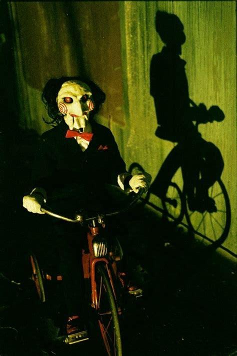

This year's competition kicks off in Tartu, featuring a grueling 120km race. Riders from across the globe are ready to battle it out, including reigning champion Toomas Kantpea, the legendary Michael Rattapede from the USA, and world-class challengers like Zuzu Lorem from Japan and Neo the Chosen One straight out of the Matrix.
Michael Rattapede, last year's champion, ready to defend his title.
Welcome to DOWNHILL 2025, the craziest mountain biking event on the planet! With 150 fearless competitors from 30 countries, this year's edition promises to be wilder than ever. Last year's champion, Dildomar Kuutõbine, made history with the first-ever 720 triple backflip. But rumor has it that the mythical daredevil Leonidas Koala—who allegedly rode down from Mount Everest—might make an appearance!
Dildomar Kuutõbine, the man who defied gravity with his 720 triple backflip, now ready to race again.